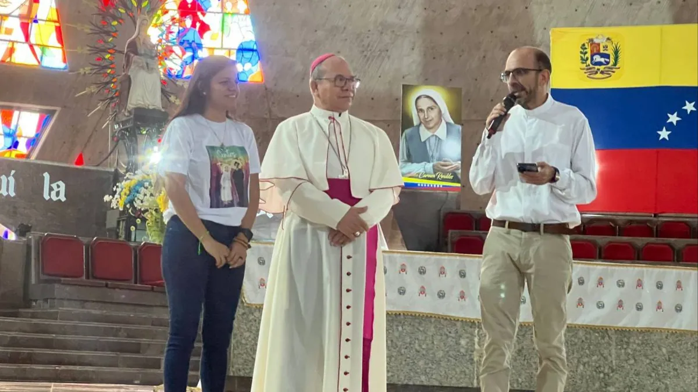
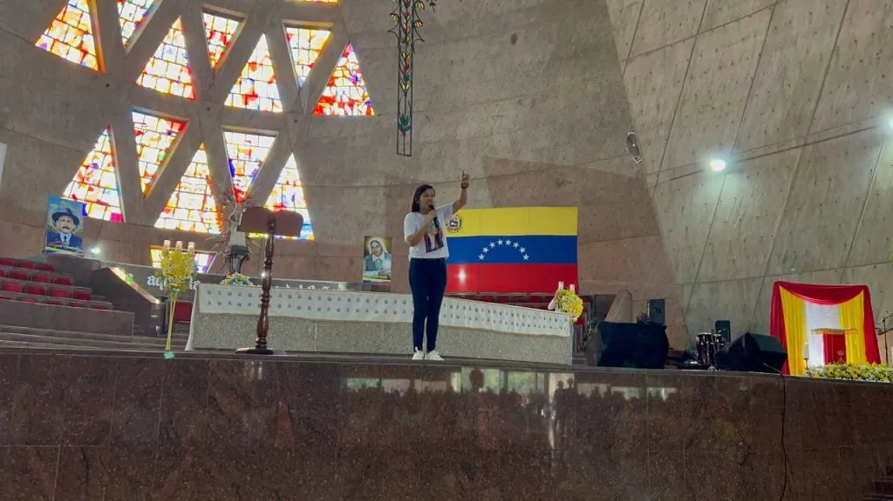
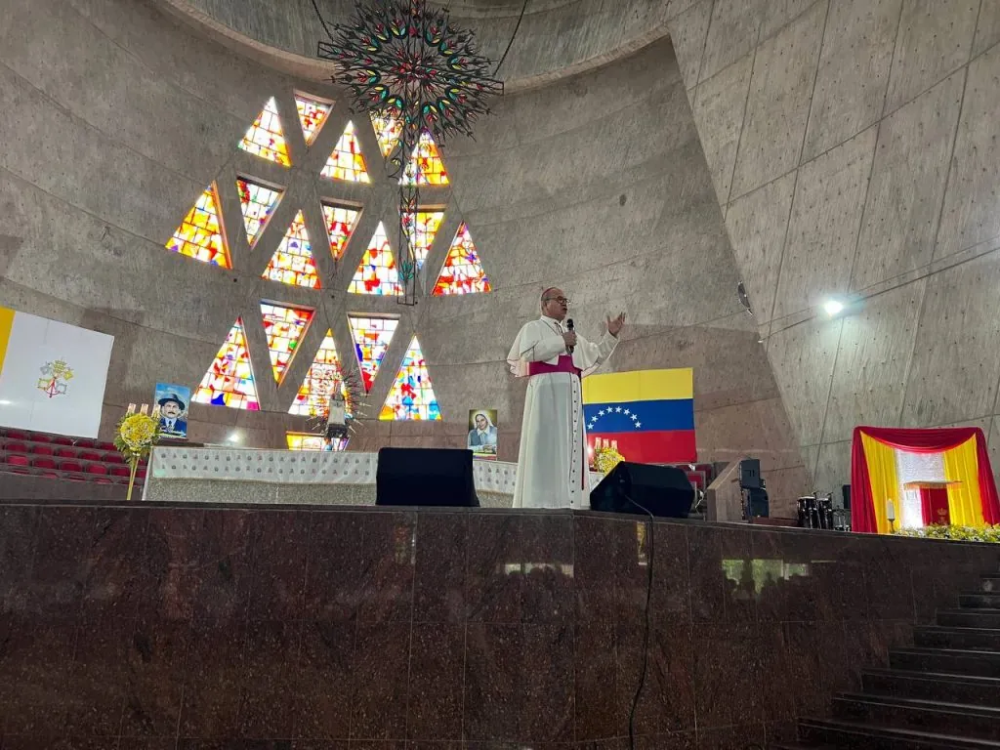

Jubileo de los Movimientos de Apostolado y clausura del Año Jubilar de Guanare
Jornada jubilar de los movimientos de apostolado en el santuario de Coromoto, el 29 de noviembre de 2025, que cerró el Año Jubilar de la diócesis.
Evento de la Diócesis de Guanare. El Centro participó, no lo organizó.

Datos del evento
- Fecha
- Sábado 29 de noviembre de 2025
- Hora
- No publicada en las notas oficiales.
- Modalidad y lugar
- Presencial · Basílica Menor Santuario Nacional Nuestra Señora de Coromoto, Guanare
- Organiza
- Diócesis de Guanare, con la participación del Centro de Laicos, Familia y Juventud
- Estado
- Realizado
Cómo fue
Laicos, niños, jóvenes, familias y sacerdotes de las parroquias se juntaron con el obispo diocesano en la Basílica Menor Santuario Nacional Nuestra Señora de Coromoto. La directora del Centro abrió con una reflexión sobre sinodalidad: la Palabra escuchada convierte el corazón, y los carismas y ministerios sirven a la unidad.
Después se celebró la Eucaristía, presidida por el obispo de Guanare. Con ella se cerró el Año Jubilar de la diócesis.
Qué se hizo
- Reflexionaron sobre sinodalidad.
- Celebraron la Eucaristía.
- Cerraron el Año Jubilar diocesano.
Quién participó
Solo cargos públicos. Los nombres de laicos participantes y de menores no se publican.
- Saritza Roque, directora del Centro de Laicos, Familia y Juventud.
- El obispo diocesano de Guanare, que presidió la Eucaristía.
- Sacerdotes, movimientos de apostolado y fieles de las parroquias.
Galería

Una mujer habla desde el presbiterio de la basílica, de arquitectura triangular con vitrales. Crédito: CEV Medios o Prensa CEV; autor de la foto no indicado (C2). 
El obispo celebra en el altar del santuario de Coromoto, con las banderas de Venezuela y del Vaticano. Crédito: CEV Medios o Prensa CEV; autor de la foto no indicado (C2).